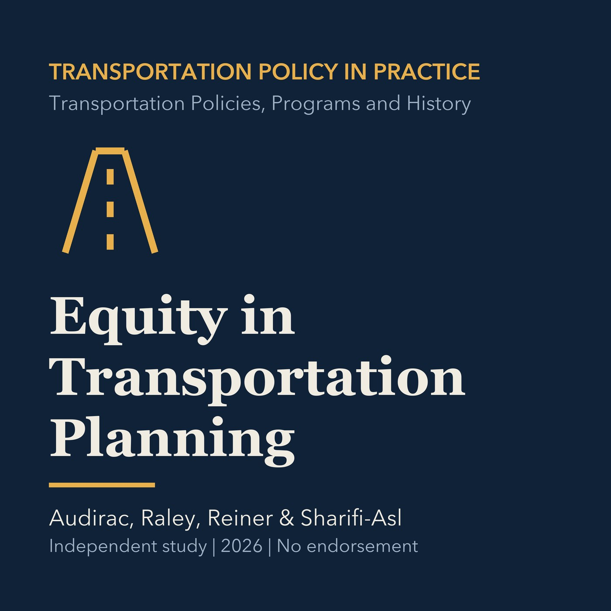

EPISODE 04
Equity in Transportation Planning
Introduces distributional, procedural, and accessibility dimensions of transportation equity, then frames questions for Torrance decisions.

- Stable GUID
4bc8957c-588f-53b2-a6f6-a4fefa2f827a- Release
- transportation-policies-programs-history-v2026.3
- SHA-256
4f1f1c3f8ae2588679cac47e8914a65afbe0ab3983a9870bc866081a6723651c